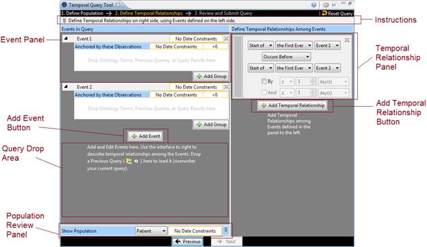
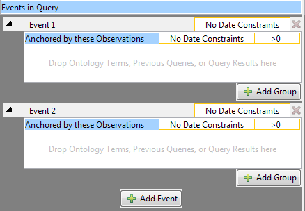
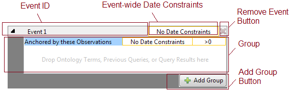
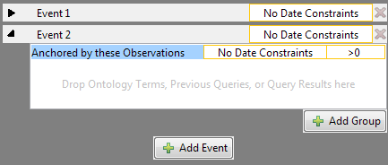
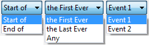
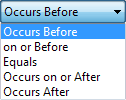
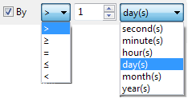

Step 2: Define Temporal Relationships is used to define temporal relationships. It allows users to create a list of Events and a list of Temporal Relationships. Users define a list of interested Events and also define Temporal Relationships to describe how the events are related temporally, e.g. Event A must occur before Event B.
The view is therefore a bit more complicated than Step 1 presented in the earlier section. It is broken into two major parts, presented below. On the left are the Event in Query panel and the Show Population panel. The Event in Query panel lets users define a list of Events. The Show Population panel allows users see and change the population definition originally defined in Step 1. On the right is a panel allowing users to add, remove, or modify relationships among the events.
Only when at least one relationship is defined will the “Next” button in the Footer become active so users can move to Step 3.

Instructions
Similar to the instructions in Step 1, Instructions area here can be expanded and collapsed with a mouse click.

(Collapsed form (default))

(Expanded form)
Events in Query Panel

The Events in Query Panel allows users to add, remove, and edit each Event. Each Event is represented by an Event Panel. An Event consists of a list of Groups just like a population definition. Users can add, remove, and edit each of the Groups in an Event by dragging terms into a group, changing its constraints, etc. At startup, two empty Events are added, each with a Group. More Events can be added by clicking on the Add Event button.
One difference between an Event and a set of Groups in Step 1 is that the first Group in an Event is special. It cannot be removed (note the missing Remove Group button), and its Group Binding Control is missing. The Group Binding for the 1st Group of every Event is not changeable. All other Group’s Group Bindings are changeable. The first group anchors all other groups in an Event. That is, the first Group determines the timing of the enclosing Event with respect to the other Events temporally in the query.
Under the list of Events is the gray background, which serves as a Query Drop Area. Users can drop previous query in the Query Drop Area to overwrite the current query. It has the same effect as the Query Drop Area in Step 1.
An Event Panel has several components.

Event ID
This area shows the Event’s name and color. Clicking on this area will expand/collapse the entire Event. When an Event Panel is collapsed, all its Groups are hidden. Only a row that contains the Event ID area is shown. Click on the Event ID area to expand the Event. All Events are expanded when created. Color of an Event is assigned only when at least one term has been added to it.

(Event 1 is collapsed, while Event 2 stays in its expanded form)

(Event 1 with a color label. Color is assigned when there is at least an item in one of the Event’s Groups)
Event-Wide Date Constraints
Selecting this area allows users to specify date constraints for all Groups in this Event. This serves a similar function as the supplemental Query-wide Date Constraints Control Panel in the Step 1 view.
Remove Event Button
Clicking this button will remove the Event, deleting all its content and removing it from view.
Group Panel
The Group Panel is the same as the ones in Step 1.
Add Group Button
Clicking on it adds a new Group to the Event.
Show Population Panel

At the bottom of the left hand side of the Step 2 view sits the Show Population Panel. This is a panel that is initially collapsed. It is a panel that conveniently allows users to bring up the Population created in Step 1 in the same view with the Events and Temporal Relationships in Step 2. Users can also modify the Population here directly. Any changes made here will change the Population in Step 1, and any changes made in Step 1 will affect the Population shown here because the Population is one and the same.
By clicking on the header “Show Population” or the expand icon to the right end of the panel, users can expand the panel to see the Population details:

( Show Population Panel is Expanded and shown in context of the entire left-hand side of the Step 2 view.)
The population in Step 1 is shown. The title changes to “Edit Population,” and every component is editable just as they are in Step 1.
Temporal Relationship Definition Panel
On the right hand side of the Step 3 view is where users can define how Events are related to one another temporally. The Temporal Relationship Definition Panel contains a list of Temporal Relationship Panels and an Add Temporal Relationship Button. These components are described in detail below.
Please note that at least one Temporal Relationship Panel must be filled before users can move on to Step 3. A Temporal Relationship Panel is filled only if has a fulfilled Event in the Top Event Definition dropdown box and a fulfilled Event in the Bottom Event Definition dropdown box (see the image below). A fulfilled Event is one that has at least a fulfilled Group. A fulfilled Group is one that contains at least one term (not empty). Only when a fulfilled Temporal Relationship has been defined will the “Next” button become active.
Color Indicator
The color indicator shows the colors of the Events that are being referenced in the Temporal Relationship. The top color (green in this example) matches the color of the Event in the Top Event Definition row and the bottom color (orange) matches the color of the Event in the Bottom Event Definition row. If an Event that has no content is referred, no color will be displayed in the Color Indicator.

Remove Relationship Button
Clicking on this button will remove the Event and discard its content.
Top Event Definition
This row allows users designate the first Event in this Temporal Relationship. A second event is specified in the Bottom Event Definition row. The dropdown boxes have the following choices:
(Dropdown box options for Event Definition)
Event Ordering
This dropdown box describes how the Top Event relates to the Bottom Event.
 (Dropdown box options for Event Ordering)
Bottom Event Definition
This row allows users designate the second Event in this Temporal Relationship. It has the same dropdown box options as Top Event Definition.
Occurrence Temporal Constraint
Users can optionally describe the specified Event Ordering by a time range, creating the bolded part of, for example, “Event 1 Occurs Before Event 2 By > 5 day(s).” This additional temporal constraint can be a bounded range such as “By > 5 day(s) And < 10 day(s).” Users must first check the “By” checkbox to enable the dropdown boxes on that row. The “And” checkbox becomes enabled only when the “By” checkbox is checked. Checking the “And” checkbox enables the dropdown boxes on its row. Both the By row and the And row have the same options depicted below.
(Options for Occurrence Temporal Constraint)
Add Temporal Relationship Button
This adds a new Temporal Relationship Panel should users require more relationship constraints among Events.